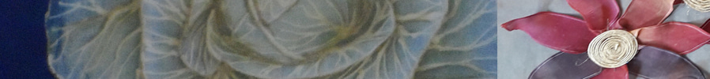

Hello Ahn Jung-jung is a natural dyeing aftercare workshop. We plan to operate the homepage in the future. Please pay attention
We make natural dyeing lecture plan and experience plan and exchange with local lifelong education center, welfare center Through this plan, we will have a chance to promote and promote natural dyeing experience and education.
At the same time, we have made steady use of our work and the experience of natural dyeing research institute Creation activities are applied to class development and product development so that they also lead to sales and education. Also, make sure you have the tools you need for dyeing and market them so that they can be sold. To build a homepage that can lead to promotion, education and sales of natural dyeing workshop Secure.